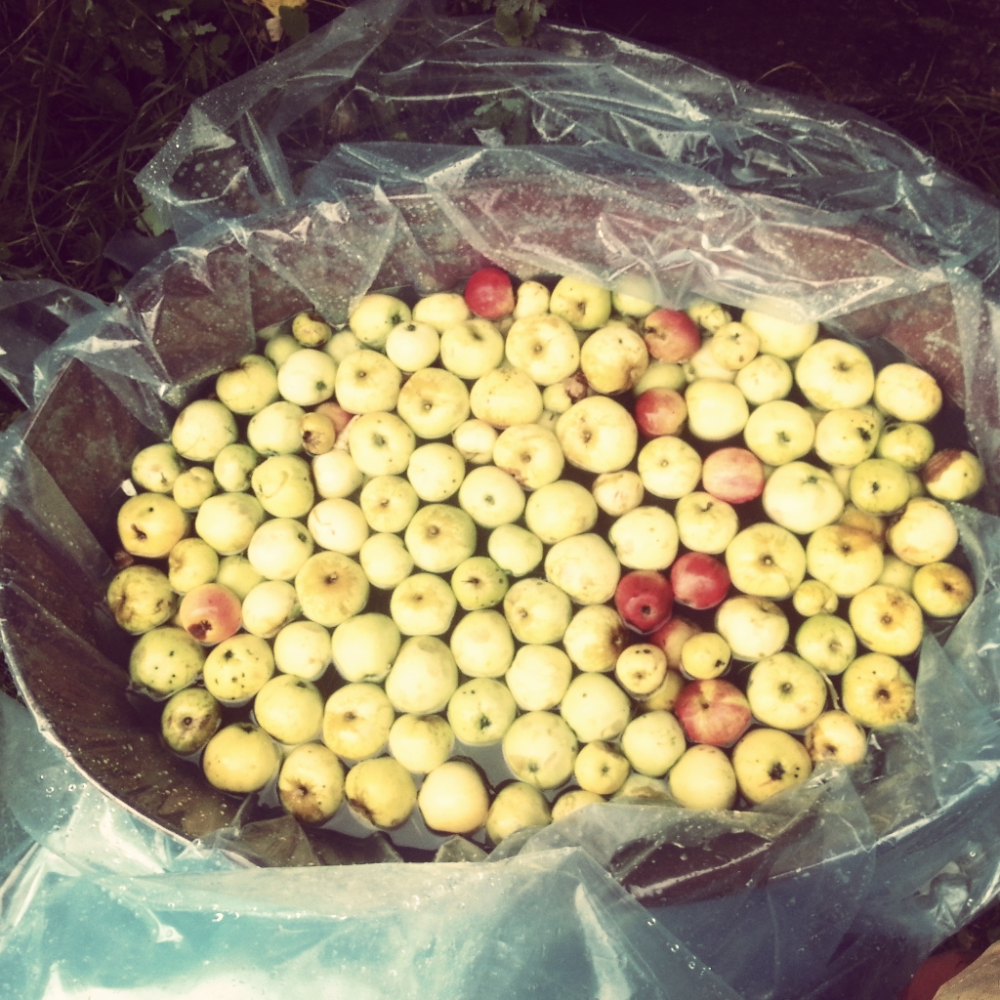

õun õun õun õun õun õun õun õun õun õun õun õun õun õun õun preformated õunakuhi
Minu lemmiksordid:
Esimesed andmed õunapuude kultiveerimisest Anatoolias ja Mesopotaamia põhjaosas pärinevad teisest aastatuhandest eKr. Hiinat ja Väike-Aasiat ühendavate pikkade kaubateede kasutuselevõtmisel (kõige varem 3500 eKr) võtsid kaupmehed kaasa nii värskeid kui ka kuivatatud õunu, mis võimaldas mitmete õunapuuliikide levimist. Kaubateede kasutamine võimaldas areneda ka tänapäeval laialdaselt levitatud hübriidsel aed-õunapuul (M. domestica), kelle kõige tähtsam esivanem on tõenäoliselt Kesk-Aasias kasvav Sieversi õunapuu. Arvatavalt andsid oma osa ka idapool kasvavad ploomilehine õunapuu (Malus × prunifolia), ida-mariõunapuu (M. baccata), mandžuuria mariõunapuu (M. baccata) ja toringo õunapuu (M. toringo). Läänesuunalisel hübridiseerumisel andsid oletatavalt oma panuse ka mets-õunapuu ja ida-õunapuu.
Teadaolevalt tegelesid õunapuude kasvatamisega hetiidid. Aja jooksul levitati õunapuid kogu Mesopotaamiasse ja Egiptusse. 13. sajandil eKr, Ramses II ajal, hakati õunapuid kasvatama Niiluse deltas. Ramses III jagas õuntega täidetud korve Teeba preestritele.
Kuva Wikipedia artikkel kastis